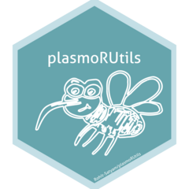

Quickly create an organism-specific OrgDb package
Source:R/easymakeOrgdb.R
easymakeOrgdb.RdCreate an AnnotationDbi-compatible OrgDb source package from a VEuPathDB GFF3 file and a Gene Ontology Association File (GAF). Both inputs may be local files or HTTP(S) URLs; gzip-compressed inputs are supported.
Usage
easymakeOrgdb(
gff,
gaf,
out.dir = ".",
taxid = 36329,
genus = "Plasmodium",
sp = "falciparum3D7",
version = "0.1.0",
verbose = TRUE,
maintainer = "John Doe <johndoe@gmail.com>",
api_key = Sys.getenv("VEUPATHDB_API_KEY"),
timeout = 300,
overwrite = FALSE
)Arguments
- gff
Local file path or HTTP(S) URL to a GFF3 file (.gff/.gff3, optionally gzip-compressed).
- gaf
Local file path or HTTP(S) URL to a GAF file (plain or .gz).
- out.dir
Directory where the package source and tar.gz will be saved.
- taxid
NCBI taxonomy identifier.
- genus
Organism genus, used in the generated package name.
- sp
Species (optionally including strain), without whitespace.
- version
Valid R package version, e.g., "0.1.0".
- verbose
Whether to print informational messages.
- maintainer
Name and email, e.g., "Jane Doe jane@example.org".
- api_key
Optional VEuPathDB bearer token. It is sent only to recognised VEuPathDB-family HTTPS hosts. The requested endpoint must support bearer-token authentication.
- timeout
Positive download timeout, in seconds.
- overwrite
Whether to replace an existing package of the same name and version. Defaults to FALSE.
Value
Invisibly returns the normalized path of the generated source package archive (.tar.gz). The unpacked package source is also retained.
Details
The GFF-derived genes define the annotation universe. Negative (NOT) GO
annotations, invalid/unknown GO identifiers, and associations whose gene
IDs do not match the GFF are excluded. The full GFF gene universe is kept,
including genes without a GO annotation.
Note: If the function reports too many GO IDs as obsolete, try using the latest GAF file from VEuPathDB. Obsolete terms are routinely removed i.e. version 68 will have more obsolete GO IDs and associations than version 71. Also, routinely update GO.db and Annotationdbi R packages
Examples
if (FALSE) { # \dontrun{
archive <- easymakeOrgdb(
gff = "PlasmoDB-68_Pfalciparum3D7.gff",
gaf = "PlasmoDB-68_Pfalciparum3D7_Curated_GO.gaf.gz",
out.dir = "./annotation",
taxid = 36329,
genus = "Plasmodium",
sp = "falciparum3D7",
version = "0.1.0",
maintainer = "Jane Doe <jane@example.org>",
verbose = TRUE, overwrite = TRUE
)
install.packages(archive, repos = NULL, type = "source")
} # }